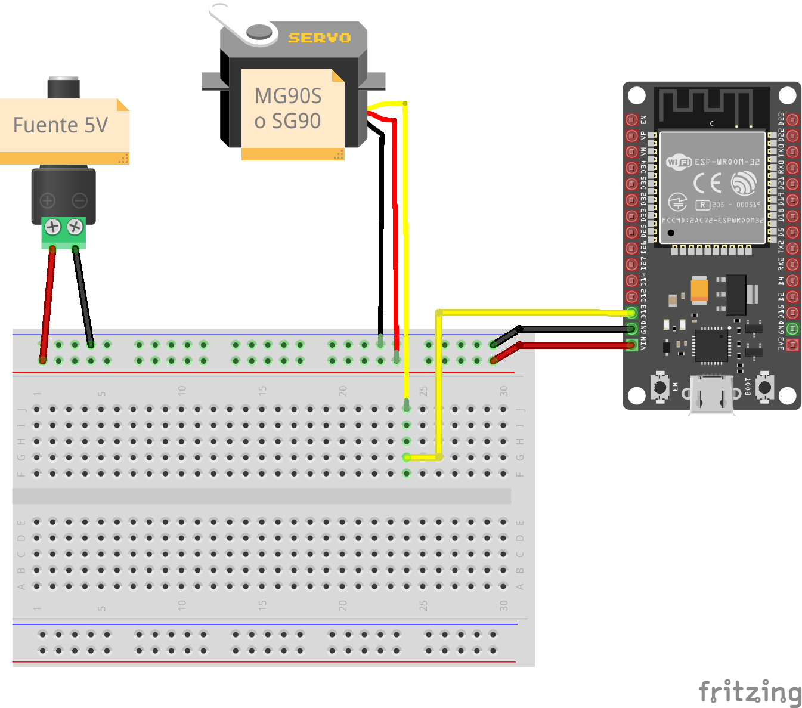
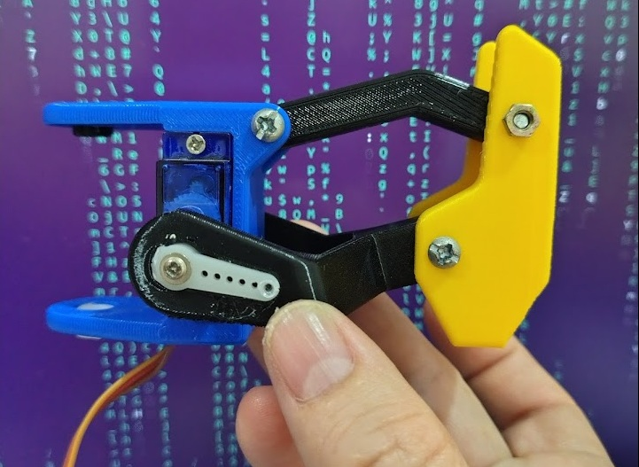

Continuando con la serie ‘Construyendo Proyectos de Internet’, en esta ocasión estoy replicando un pequeño robot cuadrúpedo inspirado en un diseño compartido por la comunidad maker.
El proyecto consiste en construir una arañita robótica impresa en 3D, equipada con ocho microservos que permitirán mover sus patas y desplazarse de forma similar a un pequeño cuadrúpedo.
Como controlador principal utilizaré un ESP32, lo que permitirá programar diferentes patrones de movimiento y, en futuras versiones, incorporar nuevas funcionalidades.
El proyecto continúa en desarrollo, por lo que esta página documenta el proceso realizado hasta el momento.
Mi aporte al proyecto hasta el momento
- Impresión 3D de las piezas estructurales.
- Selección y evaluación de microservos SG90 y MG90S.
- Adaptación del proyecto para utilizar ESP32 como controlador principal.
- Diseño inicial del sistema de alimentación y conexiones eléctricas.
- Calibración de servomotores antes del ensamblaje.
- Ensamblaje parcial de la estructura robótica.
- Pruebas mecánicas iniciales.
- Documentación del proceso para fines educativos y de experimentación.
Configuración inicial de los servos
Antes de instalar los servomotores en la estructura del robot, es recomendable llevar cada servo a su posición central de 90°.
Esto facilita el ensamblaje mecánico y reduce la necesidad de realizar correcciones posteriores.
Para la calibración inicial se conecta cada servo al ESP32 utilizando una fuente externa de 5 V.
Una vez cargado el programa, el servo se mueve automáticamente a la posición de 90°. Después de alcanzar esa posición, pueden instalarse los brazos y piezas mecánicas procurando mantener una posición neutra en cada articulación.

Código fuente para configurar servos en 90°
#include <ESP32Servo.h>
Servo servo;
void setup() {
servo.attach(13);
servo.write(90);
}
void loop() {
}Este programa utiliza la librería ESP32Servo para controlar un servomotor conectado al GPIO 13 del ESP32.
Al iniciar el sistema, el servo se posiciona automáticamente en 90°, correspondiente a la posición central de trabajo.
Esta configuración resulta útil para calibrar los servos antes del ensamblaje del robot cuadrúpedo.
Materiales utilizados
Electrónica
- 1 ESP32
- 8 microservos SG90 y/o MG90S
- cables Dupont
- protoboard para pruebas iniciales
- fuente de alimentación de 5 V
Materiales de ensamblaje
- tornillos M3
- tuercas M3
- silicona líquida para fijar los brazos de los servos a las piezas impresas
- estaño para soldadura
- cables para conexiones eléctricas
Impresión 3D
- PLA negro
- PLA amarillo
- PLA azul
Herramientas
- destornillador
- cautín para soldadura
- alicate de corte
- pinzas de precisión
Ensamblaje parcial

Lo que he aprendido hasta el momento
- Funcionamiento y control de múltiples servomotores con ESP32.
- Importancia de centrar y calibrar los servos antes del ensamblaje.
- Relación entre diseño mecánico y movimiento de un robot cuadrúpedo.
- Distribución adecuada de la alimentación para evitar caídas de voltaje.
- Ensamblaje de mecanismos impresos en 3D con tornillería y servomotores.
- Diferencias prácticas entre microservos SG90 y MG90S.
- Adaptación de diseños open source para fines educativos y experimentales.
Posibles mejoras futuras
Estas son ideas futuras, no funcionalidades actuales del proyecto.
- Control remoto mediante interfaz web con WiFi.
- Sensores ultrasónicos para detección de obstáculos.
- Más movimientos mediante interpolación de trayectorias.
- Rutinas de marcha más eficientes y estables.
- Batería recargable para funcionamiento autónomo.
- Cámara ESP32-CAM para visión remota.
- Comportamientos autónomos basados en sensores.
- Optimización de la estructura para reducir peso y consumo energético.
Estado actual del proyecto
El proyecto continúa en desarrollo.
Hasta el momento se han realizado la impresión de las piezas, la selección y calibración inicial de los servomotores, pruebas de ensamblaje mecánico y la preparación del ESP32 como controlador principal.
La documentación se irá actualizando a medida que avance la construcción, programación y puesta en funcionamiento del robot cuadrúpedo.